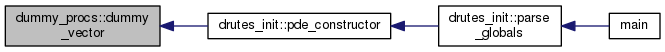
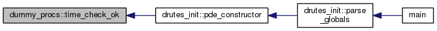

dummy_procs Module Reference
Functions/Subroutines | |
| real(kind=rkind) function, public | dummy_scalar (pde_loc, i, quadpnt, r) |
| this function returns zero, in order to null zero terms from some particular PDE problems More... | |
| subroutine, public | dummy_vector (pde_loc, i, quadpnt, r, vector_in, vector_out, scalar) |
| this procedure returns vector of zeroes More... | |
| subroutine, public | dummy_tensor (pde_loc, i, quadpnt, r, tensor, scalar) |
| this function returns zero matrix (tensor of second order) More... | |
| logical function, public | dummy_logical () |
| this function always returns .true. More... | |
| logical function, public | time_check_ok (pde_loc) |
Function/Subroutine Documentation
| logical function, public dummy_procs::dummy_logical | ( | ) |
this function always returns .true.
Definition at line 80 of file dummy_procs.f90.
| real(kind=rkind) function, public dummy_procs::dummy_scalar | ( | class(pde_str), intent(in) | pde_loc, |
| integer(kind=ikind), intent(in) | i, | ||
| type(integpnt_str), intent(in), optional | quadpnt, | ||
| real(kind=rkind), dimension(:), intent(in), optional | r | ||
| ) |
this function returns zero, in order to null zero terms from some particular PDE problems
- Parameters
-
[in] i integer number [in] r real number
Definition at line 11 of file dummy_procs.f90.
Referenced by drutes_init::pde_constructor().
type definition for common quasilinear partial diferential equation in a format
Definition: pde_objs.f90:68
Definition: typy.f90:17
Definition: pde_objs.f90:1
Definition: global_objs.f90:1
Here is the caller graph for this function:
| subroutine, public dummy_procs::dummy_tensor | ( | class(pde_str), intent(in) | pde_loc, |
| integer(kind=ikind), intent(in) | i, | ||
| type(integpnt_str), intent(in), optional | quadpnt, | ||
| real(kind=rkind), dimension(:), intent(in), optional | r, | ||
| real(kind=rkind), dimension(:,:), intent(out), optional | tensor, | ||
| real(kind=rkind), intent(out), optional | scalar | ||
| ) |
this function returns zero matrix (tensor of second order)
- Parameters
-
[in] i integer number [in] r real number [out] tensor second order tensor to bye filled by zeroes [out] scalar scalar value to be supplied by zeroes
Definition at line 55 of file dummy_procs.f90.
Referenced by drutes_init::pde_constructor().
type definition for common quasilinear partial diferential equation in a format
Definition: pde_objs.f90:68
Definition: typy.f90:17
Definition: pde_objs.f90:1
Here is the caller graph for this function:

| subroutine, public dummy_procs::dummy_vector | ( | class(pde_str), intent(in) | pde_loc, |
| integer(kind=ikind), intent(in) | i, | ||
| type(integpnt_str), intent(in), optional | quadpnt, | ||
| real(kind=rkind), dimension(:), intent(in), optional | r, | ||
| real(kind=rkind), dimension(:), intent(in), optional | vector_in, | ||
| real(kind=rkind), dimension(:), intent(out), optional | vector_out, | ||
| real(kind=rkind), intent(out), optional | scalar | ||
| ) |
this procedure returns vector of zeroes
- Parameters
-
[in] i integer num [in] r real number [in] vector_in input vector [out] vector_out output vector [out] scalar scalar value to be supplied by zeroes
Definition at line 28 of file dummy_procs.f90.
Referenced by drutes_init::pde_constructor().
type definition for common quasilinear partial diferential equation in a format
Definition: pde_objs.f90:68
Definition: typy.f90:17
Definition: pde_objs.f90:1
Here is the caller graph for this function:

| logical function, public dummy_procs::time_check_ok | ( | class(pde_str), intent(in) | pde_loc | ) |
Definition at line 87 of file dummy_procs.f90.
Referenced by drutes_init::pde_constructor().
type definition for common quasilinear partial diferential equation in a format
Definition: pde_objs.f90:68
Definition: typy.f90:17
Definition: pde_objs.f90:1
Here is the caller graph for this function:
